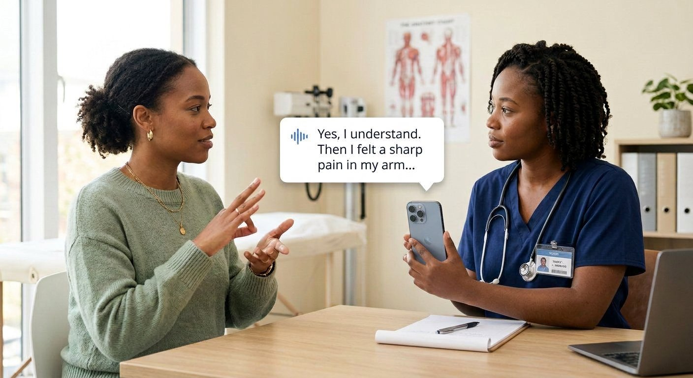
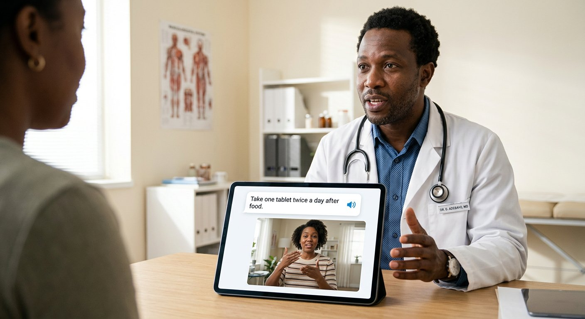
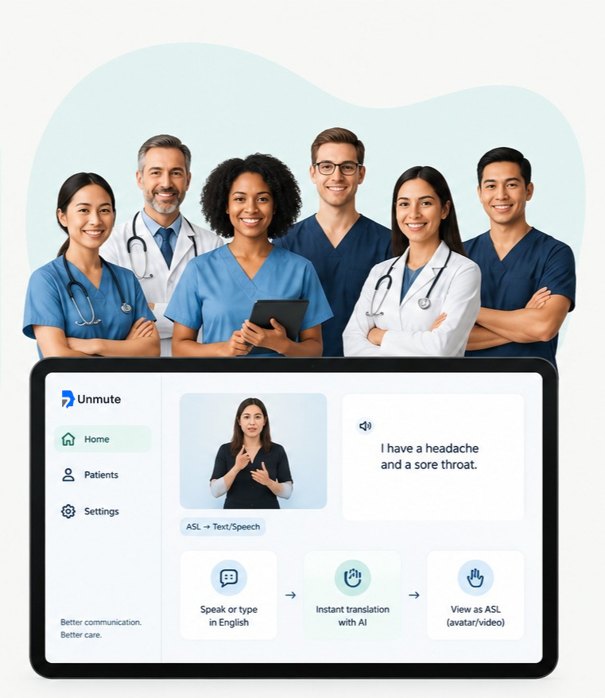

Sign-Language Communication for Healthcare
Unmute is an AI-powered sign-language communication platform that enables two-way communication between Deaf patients and healthcare professionals. It translates supported sign language into text or speech, and converts clinicians' spoken or written messages into visual sign-language output — so routine care can happen directly, in the room.
The Patient Speaks

The Practitioner Responds

Institutional Access

Supported ASL is recognised and converted into text and speech the practitioner can read or hear immediately.
Spoken or written replies are converted into visual sign-language output for the patient — the conversation goes both ways.
A team plan puts the tool in the hands of up to 10 practitioners, so the ward can communicate directly, shift after shift.
On-site interpreters are scarce, expensive and rarely available the moment a patient arrives. Unmute gives practitioners an accessible tool to communicate directly with Deaf patients during routine interactions — so the everyday conversation no longer depends on scheduling.
Unmute begins with ASL and routine healthcare interactions, with more advanced translation capabilities developed over time.
Early access opens with our first pilot sites
contact@liveunmute.com